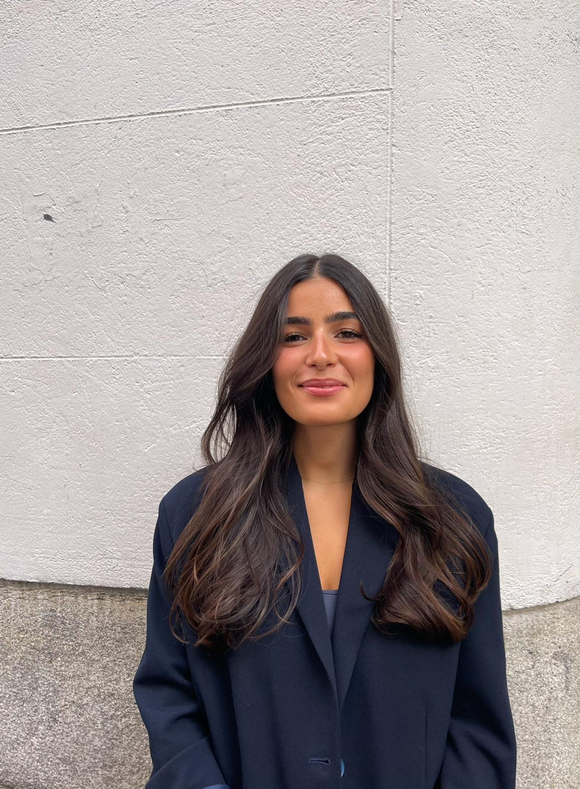
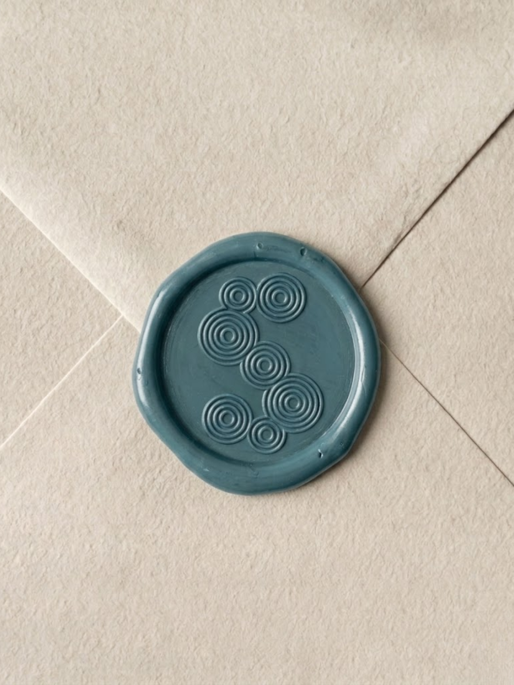
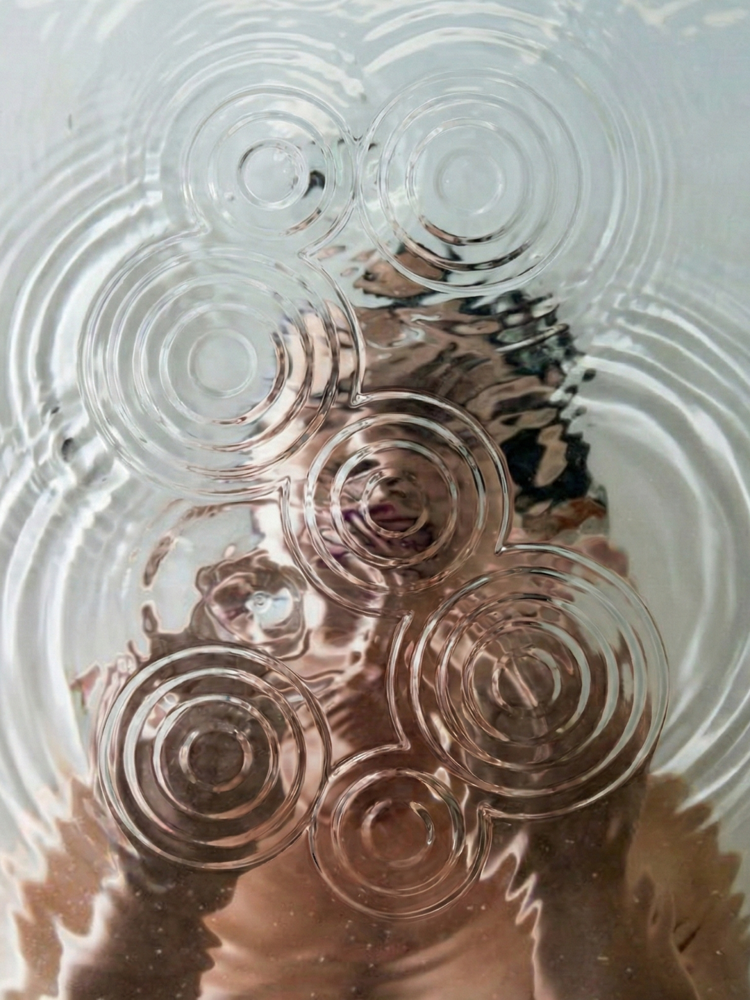
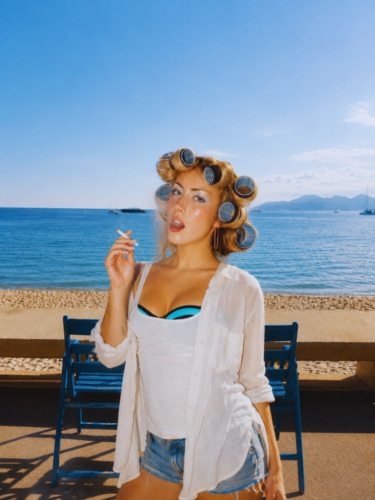
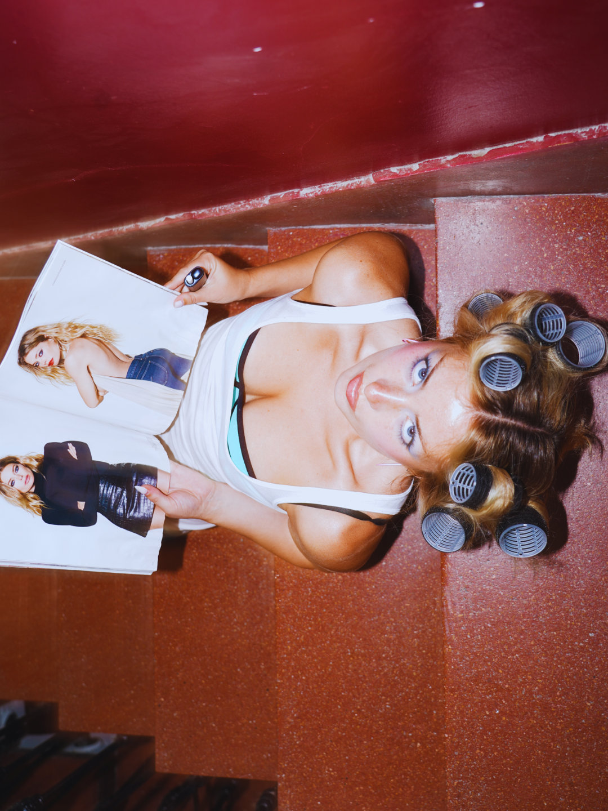
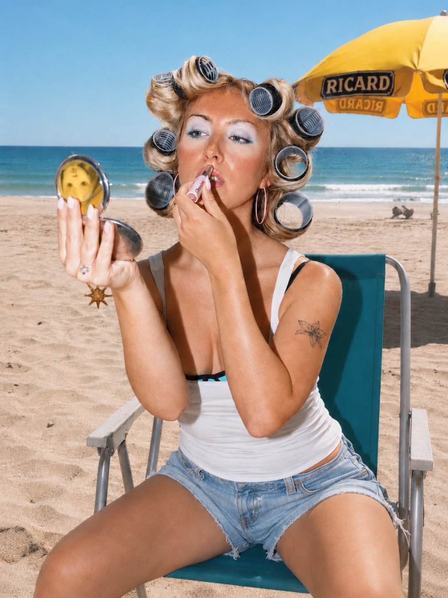

Portfolio — Direction créative
Hanna Gerbi
Brand & Creative Direction
Je construis des identités de marque qui tiennent debout : de la stratégie au contenu, jusqu'au dernier pixel.
Voir le travail
About
Deux mondes, une même logique créative.
Je suis étudiante en direction créative, et en parallèle, je travaille chez Seoni, une marque française premium de pommeaux de douche filtrants fabriqués en Corée, distribuée chez Merci, Printemps et Oh My Cream.
Mon rôle couvre le marketing, les partenariats, les relations influenceurs et la création de contenu — toujours avec la même exigence : que le fond et la forme racontent la même histoire.
Ce que j'apporte : un œil éditorial, une écriture directe et un sens aigu du détail visuel — appliqués aussi bien à une marque qu'à un projet personnel.

Work
Une sélection de projets
Travail de marque pour Seoni, et explorations de direction artistique personnelle — deux registres, une même rigueur.




Process
Comment je travaille
Comprendre
Je pars toujours du brief réel — la marque, l'audience, la contrainte — avant de penser esthétique.
Construire
Je pose une direction claire : palette, ton, structure. Pas de remplissage, chaque choix a une raison.
Exécuter
Du contenu au pixel final, je reste sur le terrain de la production — je ne délègue pas le détail.
Itérer
Je teste, j'ajuste, je recommence. Une bonne direction créative se voit dans la durée, pas dans un seul rendu.
Contact
Travaillons ensemble.
Pour un projet de marque, une collaboration ou simplement échanger.
hello@hannagerbi.com